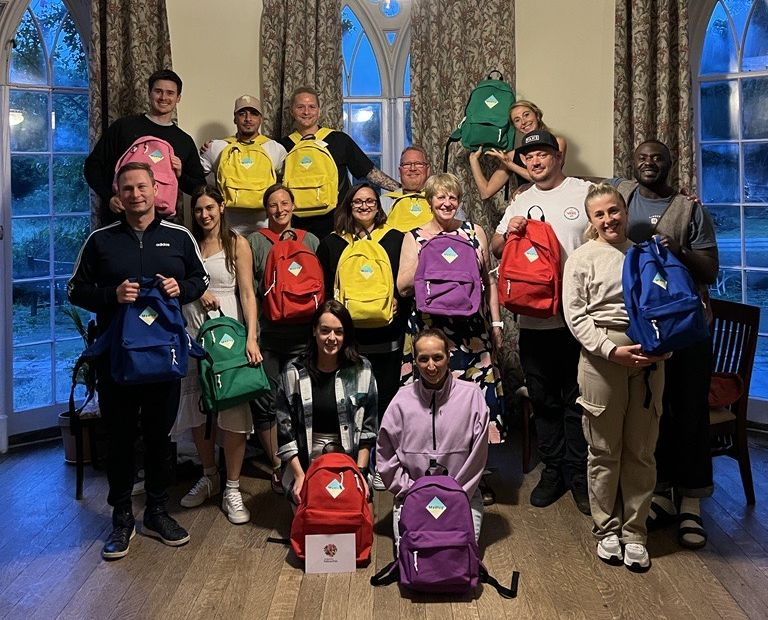

Speaking at a National Fostering Agency conference While studying for his A-levels at college, Luke was invited to speak to children in care at a National Fostering Agency event. He had been asked to talk about eating fruit and vegetables. One of the young people asked him to talk about his own experience of care instead, and he spoke for 20 minutes.
The NFA’s chief executive, Iain Anderson, asked him straight afterwards: “Can you do that at our national conference?” That was the first keynote, at 19.

Children & Young People Now, July 2012 In March 2012 Luke became a Young Person’s Ambassador for the National Fostering Agency, a role he held until 2014, and set up his first company, Luke Rodgers Training and Consultation. He gave sessions on child development, good practice and resilience to service managers, social workers, students and children in care, and worked with universities to speak to the next generation of social workers.
In the same year he worked with Buttle UK on its Quality Mark for care leavers, and with the University of Applied Sciences Rotterdam.
Sources CYP Now, Role model of resilience (July 2012)Luke’s LinkedIn

Collecting the award at the Children & Young People Now Awards 2013 Luke won the Children & Young People Now Young Person’s Achievement Award. Ten years later, The Care Leaders would win a Children & Young People Now award of its own.
In 2013 he also joined a British Council Active Citizens study visit to Serbia, and then the Through Our Eyes project in Belgrade.
Sources Luke’s LinkedIn

Young Social Entrepreneur Award, judges’ choice, 2014 Before The Care Leaders, Luke ran his first social enterprise, building youth participation strategies with children’s services. In 2014 its peer-led leadership training reached 1,000 children in care, and Luke won a Young Social Entrepreneur Award, as the judges’ choice.
He joined the EY Foundation’s Accelerate programme for social entrepreneurs, the advisory board of the Rees Centre at the University of Oxford, and the UKCP advisory board.
Sources International Youth Foundation, 2015 Laureate Global FellowsLuke’s LinkedIn

Entrepreneur of Excellence, National Diversity Awards 2015, Liverpool Anglican Cathedral 2015 was the year the wider world noticed. Luke was named a Laureate Global Fellow by the International Youth Foundation, won Entrepreneur of Excellence at the National Diversity Awards, and received a Shackleton Leadership Award.
He became a Social Entrepreneur Fellow at the School for Social Entrepreneurs, and joined the programme board for the Mockingbird Family Model at The Fostering Network. With Innovation Unit, he brought young people in care into the design of Making York Home.
Sources International Youth Foundation, 2015 Laureate Global FellowsNational Diversity Awards 2015Shackleton Foundation, November 2015Luke’s LinkedInCase study: Making York Home

The early days of social enterprise Luke designed and ran training for Stockport’s fostering service on referrals and profiles: how they are written, and how they shape what happens to a child before anyone has met them.
Sources Case study: Stockport

Luke speaking for The Care Leaders In May 2017 Luke founded The Care Leaders: a children’s social care consultancy that brings lived experience of care and professional experience into the same room. He led it as Director of Strategy.
One of the first pieces of work asked young people, care leavers and professionals how Rotherham’s children’s services looked from where they stood.

A Care Leaders keynote, 2018 Luke was awarded the British Empire Medal in the 2018 Birthday Honours, for his commitment to children and families.

Speaking at the Attachment Research Community annual conference, 2019 Working with The National House Project, The Care Leaders trained 12 care-experienced young people from six local authorities in leadership and social entrepreneurship. They formed the Care Leavers National Movement, which Luke founded.

The Middlesbrough Children Matter brand Luke became a Knowledge Equity Fellow at Saïd Business School, University of Oxford.
The Care Leaders helped Middlesbrough Council, in special measures after an inadequate Ofsted judgement, build a vision the whole service could own: Middlesbrough Children Matter.
Sources Luke’s LinkedInCase study: Middlesbrough Children Matter

Fellows of The Care Leaders Fellowship The first cohort of The Care Leaders Fellowship came together: people with an idea, project or business that solves problems for care-experienced people, working through the Five S framework with retreats and monthly sessions. Further cohorts followed in 2023 and 2025.
Sources The Care Leaders Fellowship

The Family Business, Suffolk Luke became a director of The Care Leaders Fellowship CIC, and a non-executive director of The Staff College.
The work kept growing: The Family Business in Suffolk, PROCLAIM in Middlesbrough, and A Tool for Change with Virtual School Kent, where around 490 staff signed up.
Sources Luke’s LinkedInCase study: SuffolkCase study: Virtual School Kent

Fellows on retreat, 2023 The Care Leaders won the Children & Young People Now Workforce Development Award, ten years after Luke’s own award from the same awards. In November he became Chief Executive.
With PwC, the team opened New World, New Skills days to care leavers.
Sources Luke’s LinkedInCase study: PwC

On stage Luke has given more than 45 keynotes since the start of 2024, to rooms of 30 to 400 people. In Staffordshire, four organisations asked The Care Leaders to help them design Bridge and Beyond, for a small group of children moving between hospital, care and school.

The NAVSH annual conference, 2025 In Durham, The Care Leaders co-designed Durham Cares with the people it is for, and trained 120 residential staff across 11 children’s homes in non-violent resistance. In Darlington, designated teachers designed the Designated Leaders Programme with us.
Nationally, we ran a co-design process with Virtual School Heads through NAVSH, and helped Liverpool Virtual School put young people at the front of its conference.
Sources Case study: NVR in DurhamCase study: DarlingtonCase study: NAVSHCase study: Liverpool

The Care Leaders Summit, 26 February 2026 On 26 February 2026 The Care Leaders Summit brought councils, virtual schools, charities and businesses together, with Fellows leading the sessions. The Care Leaders won Gold, Dual Perspective Leadership Award, at the iESE Public Sector Transformation Awards.
From May, Luke led the national engagement on the Department for Education’s rewrite of the Fostering Services National Minimum Standards. In October he became Head of Partnerships at Why Care, and Mentors Who Care began with Norfolk Virtual School.
Sources Case study: The Care Leaders Summit 2026Luke’s LinkedInWhy Care partnershipCase study: Norfolk

The Care Leaders Summit, 2026 The next Fellowship cohort starts in March 2027, and the work goes on: consultancy, programmes and training for children’s services, led by people with lived and professional experience of care.
Our story
From care leaver to care leader.
At 19, Luke Rodgers BEM gave his first keynote at a National Fostering Agency event. He has spent his career since then inside children’s services, bringing his lived experience of care and his professional experience into the same room. This is the story of how that became The Care Leaders.
Choose a part of the story, then open any moment to read more and share it.